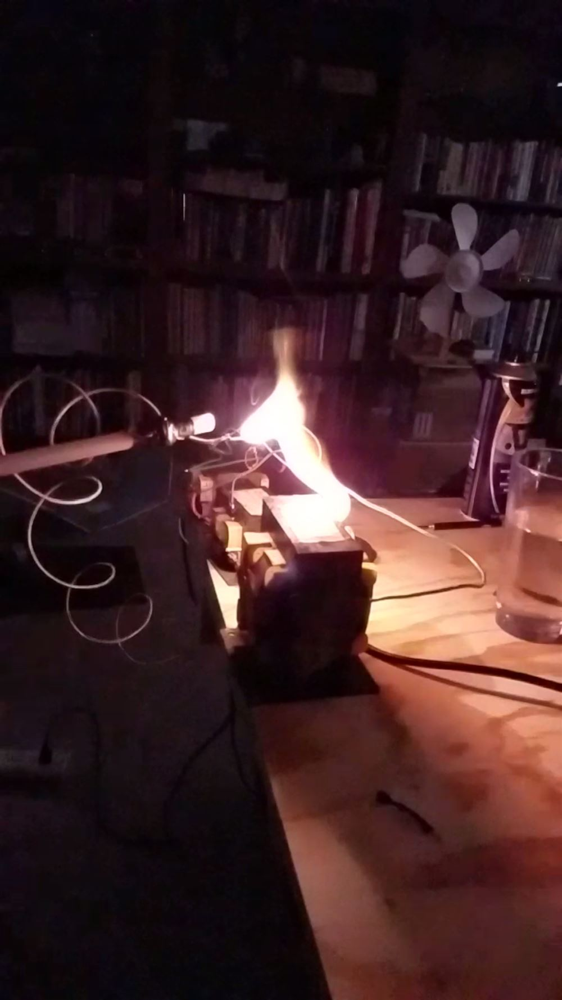
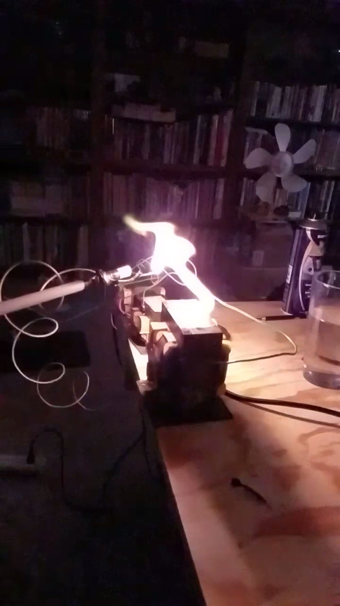
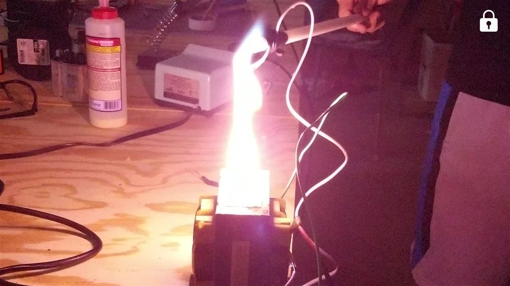

Microwave Transformer Arc
A microwave oven transformer salvaged from an appliance and used to draw sustained arcs. It was planned as an experiment and treated as the hazard it is: long insulated electrodes, careful distance, one hand in the pocket.

01 / 03 · FIRST LIGHT
The Arc Ignites
A microwave oven transformer delivers high current at high voltage, enough to sustain a standing arc between the electrodes.

02 / 03 · SUSTAINED
Holding the Plasma
Once struck, the arc holds. The plasma is hot enough to melt the electrode tips.

03 / 03 · THE SETUP
Respect the Transformer
Like the hydrogen rig, this one comes with a disclaimer: microwave oven transformers are genuinely lethal. The electrodes were handled on long insulated holders, at a careful distance, with the setup planned before power was ever applied.